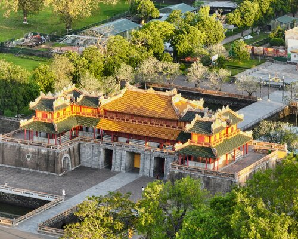

Huế - Thành phố của lịch sử và văn hóa
Chào mừng bạn đến với chuyến hành trình qua thời gian và lịch sử tại Cố đô Huế - một trong những bảo tàng lớn nhất về di sản văn hóa ở Việt Nam. Huế, nằm tại trung tâm miền Trung Việt Nam, từng là kinh đô của đế quốc Nguyễn từ thế kỷ 18 đến đầu thế kỷ 20. Cố đô Huế không chỉ là một thành phố với kiến trúc truyền thống độc đáo, mà còn là nơi lưu giữ nhiều bí mật và câu chuyện lịch sử của quốc gia.
Thành phố có kiến trúc lâu dài với các công trình nổi tiếng như Cidadela Huế, cung điện Hoàng thành và nhiều đền đài, tạo nên một bức tranh vô cùng quyến rũ và lôi cuốn. Những hàng cổ thụ và những bức tường gạch chịu thời gian tạo nên không khí trang nghiêm và tuyệt vời. Huế không chỉ đẹp về kiến trúc mà còn nổi tiếng với ẩm thực độc đáo. Các món ngon truyền thống như bún bò Huế, cơm hến, nem lụi, và bánh khoái Huế đã trở thành biểu tượng không thể thiếu khi du khách ghé thăm. Những trải nghiệm ẩm thực này làm cho chuyến du lịch của bạn trở nên trọn vẹn và đặc sắc. Ngoài ra, Huế còn là nơi lưu giữ nhiều di tích văn hóa, từ những ngôi đền thờ, đình làng đến các bảo tàng lịch sử. Việc tham quan những địa điểm này sẽ giúp bạn hiểu rõ hơn về văn hóa truyền thống và sự phồn thịnh của đế quốc Nguyễn trong quá khứ. Cố đô Huế không chỉ là điểm đến của những người yêu lịch sử mà còn là nơi mang đến trải nghiệm tuyệt vời với những cảm xúc sâu sắc và không gian tĩnh lặng. Hãy bắt đầu hành trình của bạn để khám phá vẻ đẹp tinh tế và quyền lực lịch sử tại Cố đô Huế ngay hôm nay!